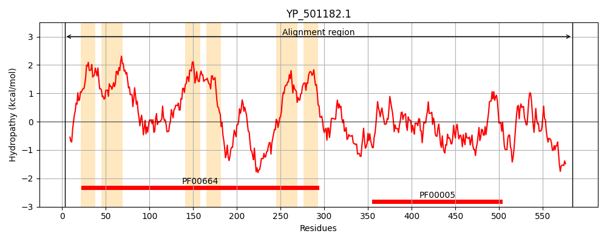
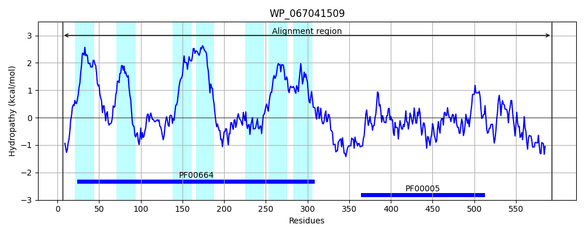
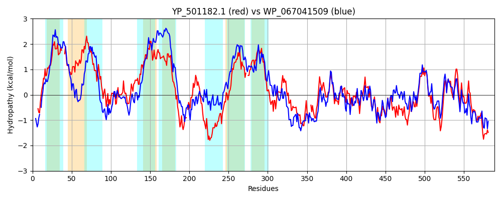

Hit Accession: WP_067041509
Hit TCID: 3.A.1.135.11
Hit Description: gnl|BL_ORD_ID|21320 gnl|TC-DB|WP_067041509|3.A.1.135.11 ABC transporter ATP-binding protein [Methanobrevibacter sp. YE315]
Mach Len: 589
e:0.000000
Query TMS Count : 6
Hit TMS Count: 7
TMS-Overlap Score: 4.550000
Predicted Substrates:None
BLAST Alignment:
Score: 817 , Bit scores: 319 bits, E-value: 1.7e-101, Alignment length: 589, Percentage identity: 31
Query: 3 NQTNWIKILSGFASDSKWKIMLSILLSIISVFSGLVPY---WAVFKIILMMINNTYTINSIMVYIFIALIAYISQVCCFGASTMLSHITAYEILSEIRKKLAQKLMRLPLGVVESKKIGELKNIFVDKVETIELPLAHMIPEVIGNLLLSAAIFLYIMLIDWRMASALLVTIPISIFAFKKVMSGFNETYAEQMKSN-NYMNSAIVEFIEGIEVIKTFNQSQSSYKKYKDAVDNYKIHTLNWFKNTWGYMNLGASVLPSTFLGILPVGMYLIS--INQLNYAEFFLCIVLSLGVVAPIKNFTNYVNHLKSIQYALTEVNQILSLEELVLSTKFKKPQHYEIAFNNVGFSYNKDK-DDLVFKHLSFTVPENNFTAIVGASGSGKSTIAKLISRYWDVTSGEITIGGINIKDIESKQLNDLVGFVGQDNFLLNLTFKENIKLGNPEATDEAVEKAAKLAQCHEFIEKLPDGYDTNVGTVGDKLSGGEKQRVTIARMILKDAPIIVLDEATVYVDPDNEQKIQEALNVLTQDKTLIVIAHRLSTIQHADQIIVLGKQQILEKGSHHLLLKLNGNYKKMWDTHMHTKDWGINT 584
++ +I++L+ ++ + K+ +L ++LS +S L+P+ W V +L N ++ Y F A I+ + M +H++A++ ++ L++LPLG + G ++ + E LAH + ++ G ++ A + + DW + L+ I + + S ++ Q ++ MN VE++ GI V K F QS S+K + DA+ NY + N+ +T M + F ++P G+ L +++ A+F I+ + + +AL + +IL+ + LV + +KP+++ I F V F Y K D+ + ++ + EN A+VG SG GK+TIA LI R+WDV G I +G ++++DI +K L + + FV Q+ L + N+ +G A+ E V+KA LAQC + IE+LPDG DT +GT G LSGG++QR+ +AR ILKDAPII+LDEAT DP+NE IQ+A++ +T DKT+I+IAHRLST+++ D+I V+ +I+E+G+H L++ G Y +MWD + W + +
Sbjct: 6 SKNKFIRLLN-YSGNYKYLSILGMILSALSAICLLIPFIYIWDVVNALLAAAPNFSQAQNLETYAFNAFAFAIAGIVLNFFGLMGTHLSAFKNEKNMKDAAINHLLKLPLGYFSNHTSGGIRKVIDFSTSKTETFLAHQLFDLTGAIITPIAFIILLFSFDWLLGLICLIPIILCFIFMYPMFSAESQNIMVQYQTYLEKMNGEAVEYVRGIPVTKAFQQSVYSFKNFIDAIRNYAKFSANYSLSTQLPMTAFTVSINGFFALLIPAGILLAGSVVDKKFLADFMFYIIFTPICAVMMNKIMTVSQDWMLASHALEGIEEILNEKPLVEAVNPQKPKNHSIEFEGVYFDYEKTSGDEHILNDVNLKINENETVALVGPSGGGKTTIASLIPRFWDVDEGSIKVGEVDVRDISTKDLMENISFVFQNTTLFKDSIYNNVAIGRKGASREDVKKALSLAQCDDIIEELPDGIDTVIGTEGTYLSGGQQQRIALARAILKDAPIIILDEATALADPENEYMIQKAISQITMDKTVIMIAHRLSTVKNVDRIYVVENGRIVEEGNHSSLVEDEGLYSRMWDEFNQSIQWKVKS 593 | Protein Hydropathy Plots: |
|---|
|  |  |
Pairwise Alignment-Hydropathy Plot:
|
|---|
|  |